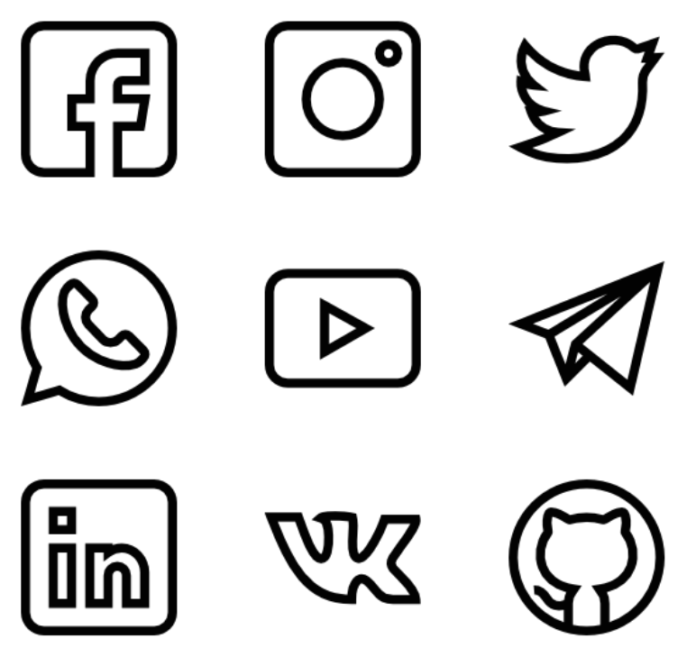

Sosiale medium har forandret hvordan vi kommuniserer med hverandre, og sosiale medium som Facebook har gitt de fleste en offentlig identitet på nettet. Internett tar en større del av livet vårt, og med smarttelefonen har vi også en enkel tilgang til internett hvor enn vi er. Mange er konstant kopla på, uavhengig av tid og stad og hvem du er med. Teknologien som vi nå omgir oss med, er heile tiden med og gir nye former for sosial samhandling mellom mennesker. Dermed forandrer teknologien både samfunnet og oss. Vi går i retning av et mer teknologi basert samfunn.
På nettet kan vi treffe mange flere mennesker, og vi har fått en øke i møtepunkt mellom menneske. Møtene skjer ofte i kortere tidsintervall, de er raskere og fragmenterte. I det virkelige livet har vi ganske god oversikt over hvem som ser og hører oss. På nettet har vi derimot lite kontroll med hvem det er som følger med på hva vi gjør, og hvordan vi er.
 Sosiale medium:
- Flere møtepunkt
- Store sosiale nettverk
- Kortere tidsintervall
- Mange-til-mange situasjon